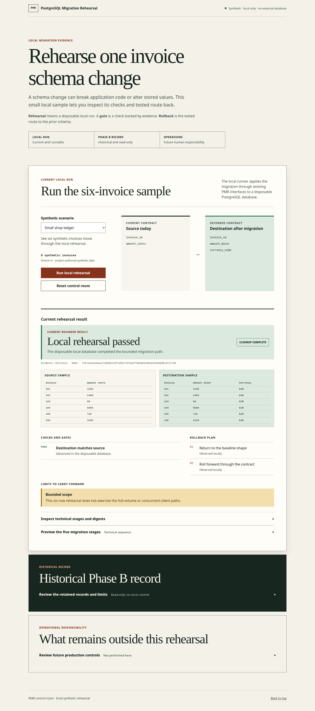

Before
invoices.amount_cents
One integer amount field in the source invoice shape.
PostgreSQL Migration Rehearsal · Database changes
Current six-invoice CLI baseline · Prepared browser history · Fictional data
Start with the current six-invoice local CLI rehearsal and its rollback. The browser below only explains prepared stages from an older record; it changes no database.
The runnable route is the opt-in PMR-DEMO-20261022-v2 CLI. It rebuilds and checks a versioned image, runs six fictional invoices through migration, rollback, roll-forward and cleanup, then prints a JSON result. It leaves the historical browser image and Phase B record unchanged.
Go to exact install and run commands · V2 procedure · recorded result · runtime provenance.
The local CLI was rerun from a clean WSL checkout at the linked commit: package provenance, image build and preflight passed; the six-row scenario returned LOCAL_REHEARSAL_PASSED with rollback complete and zero owned resources remaining.
Interactive prepared preview
All values are fictional. This guided report runs only in the browser and never starts PostgreSQL, Docker, a database, or a migration.
The old browser runner is pinned to image sha256:e4155efc…, which is unavailable in the current Docker engine. The separate V2 CLI rebuilds the reviewed image sha256:1a5aa9ff…; these are different identities, so substituting one for the other would change the historical record. LOW02 also remains open for browser executable and system-library provenance. The prepared browser preview below remains a report only.
This is a command-line run that starts a disposable local PostgreSQL database. The browser walkthrough above stays static and never starts Docker or executes SQL. Use WSL 2 with Ubuntu 24.04.5 LTS on Linux amd64 and the exact Docker packages, executables and context listed in the V2 provenance.
V2 procedure and error guidance · recorded JSON result · V2 runner source · signed Docker package verification.
Run the following in a WSL login shell. The pinned Docker package block changes system packages: use it only when preparing the host, with the official Docker Ubuntu apt source configured and the exact versions available. The Python check skips downloading when 3.12.14 is already installed; uv sync --frozen creates the project environment from the lockfile.
set -euo pipefail
sudo apt-get update
sudo apt-get install --no-install-recommends \
'docker-ce-cli=5:29.8.2-1~ubuntu.24.04~noble' \
'docker-ce=5:29.8.2-1~ubuntu.24.04~noble' \
'docker-buildx-plugin=0.37.1-1~ubuntu.24.04~noble'
mkdir -p ~/src
cd ~/src
git -c core.autocrlf=false clone https://github.com/LuxuriantTech/postgres-migration-rehearsal.git pmr-v2
cd pmr-v2
git checkout --detach 626072c0eac87f0b05c287c51f9cc5f150299c9e
uv python find 3.12.14 >/dev/null 2>&1 || uv python install 3.12.14
uv sync --frozen
uv run --frozen python --version
dpkg-query -W docker-ce-cli docker-ce docker-buildx-plugin
docker context show
docker context inspect default --format '{{.Endpoints.docker.Host}}'
sha256sum /usr/bin/docker /usr/bin/dockerd /usr/libexec/docker/cli-plugins/docker-buildx
docker buildx version
docker buildx inspect --bootstrap
PYTHONPATH=src:scripts uv run --frozen python scripts/verify_docker_repository_provenance.py
pmr_tmpdir="$(mktemp -d "${TMPDIR:-/tmp}/pmr-demo-v2.XXXXXX")"
trap 'rm -rf "$pmr_tmpdir"' EXIT
docker buildx build --platform linux/amd64 --no-cache --provenance=false \
--build-arg SOURCE_DATE_EPOCH=1788825600 \
--output "type=oci,rewrite-timestamp=true,dest=$pmr_tmpdir/image.oci.tar" \
--metadata-file "$pmr_tmpdir/build.json" runtime-baselines/demo-20260908
PYTHONPATH=src:scripts uv run --frozen python scripts/verify_demo_baseline_v2_build.py \
"$pmr_tmpdir/build.json"
docker load -i "$pmr_tmpdir/image.oci.tar"
PYTHONPATH=src:scripts uv run --frozen python scripts/rehearse_baseline_v2.py --preflight-only
PYTHONPATH=src:scripts uv run --frozen python scripts/rehearse_baseline_v2.py --scenario small-shop \
| tee /tmp/pmr-demo-v2-result.jsonThe last command prints and saves a fresh JSON result. The runner itself performs rollback to the original schema, rolls forward through contract, and cleans only its own labelled resources. Check the return state:
docker ps -a --filter name=pmr-demo-v2-
docker network ls --filter name=pmr-demo-v2-The optional package block prepares the host; the remaining commands verify the runtime and run the bounded rehearsal. If the package versions, executable hashes or context differ, stop at preflight and follow the signed package evidence; do not edit the manifest. If the build verifier reports a manifest, config, platform or material mismatch, do not load that image.
The deliberate rejection route is --scenario invalid-negative-amount. It exits with Amount must be a positive whole number of cents. before preflight or resource creation; this is an expected input error. After a successful run, expect LOCAL_REHEARSAL_PASSED, restored legacy rows, completed roll-forward, cleanup_state: complete, owned_resources_remaining: 0, and historical_phase_b_replayed: false.
invoices.amount_cents
One integer amount field in the source invoice shape.
invoices.amount_minor
invoices.currency_code
Invoice IDs and values remain visible while the shape changes.

The primary example is a six-invoice synthetic local run. It is distinct from the historical 4,096-row development demonstration. Historical Phase B is a frozen, one-shot record with no browser run control and is not rerun here.
A deliberately invalid synthetic scenario is rejected before database work. A deterministic error fixture shows that an unconfirmed cleanup blocks another run; it is not evidence of a failed real migration.
The older control room requires its unavailable, frozen PostgreSQL image identity and exact browser dependencies. Its start command is archived in the public source for inspection, but a fresh checkout cannot currently reproduce the old browser run. Use the separate six-invoice CLI baseline above for the current local path; do not edit a digest merely to make the old control room start.